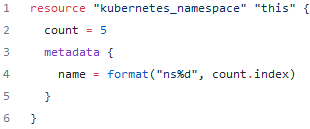

COUNT
Using count we can, you guessed it, create multiple resources of the same type. Every terraform resource supports the count block. Count exposes a count.index object, which can be used in the same way you would use an iterator in any programming language.

The above block will create 5 namespaces in Kubernetes with the following names: ns1, ns2, ns3, ns4, ns5. All fun and games until now. If you change the count to 4, the last namespace, ns5 will be deleted if you re-apply the code.
In any case, when you are using count, you can address a particular index of your resource by using type.name[index]. In our case that means individual resources can be accessed with kubernetes_namespace.this[0] to kubernetes_namespace.this[4].
Let’s suppose you want to customize, a little bit the names of the namespaces. For that, we can you use a local or a variable in conjunction with a function.

Also, let’s suppose you are creating a hundred ec2 instances and you are using a list for that to better configure them. For some reason, let’s suppose you want to remove the instance with index 13 (see what I did there?), what’ going to happen with the ones from index 14 to 100? They will be recreated because all of them are going to change their index to what it was minus 1.
And that’s why I hate count. It doesn’t give you the flexibility to create very generic resources and in my book, that’s a hard pass
FOR_EACH
For_Each can be used with map and set variables, but I don’t remember a use case in which I used a set. So what I’m always doing is using for_each on maps, and more specifically on map(object). I’ll show you what that looks like in a bit.
For_each exposes one attribute called each. This attribute contains a key and value which can be used with each.key and each.value.
With for_each, you will reference an instance of your resource with type.name[key]

We have defined a variable called namespaces and we are going to iterate through it on the kubernetes_namespace resource. This variable has a map(object) type and inside of it, we’ve defined two optional properties: annotations and labels. Optional can be used on parameters inside object variables to give the possibility to omit that particular parameter and to provide a default value for it instead. As this feature is available from Terraform 1.3.0, I believe it will soon be embraced by the community as a best practice (for me, it is already). Inside this variable, we have added a default value, just for demo purposes, in the real world, you are going to anyway separate resources from variables in their own files, and you are going to provide default values as empty maps if you are using the above approach with optionals on your parameters, but that’s a completely different story
If I want to remove namespace2 for whatever reason, what is going to happen to namespace3 and namespace4? Absolutely nothing
Ternary Operators
you have ternary operators and the syntax is:
condition ? val1 : val2
The above means if the condition is true, use val1, if the condition is false, use val2. Let’s see it in action:

nested conditional example: nested_conditional = local.val2 > local.val1 ? local.val3 > local.val2 ? local.val3 : local.val2 : local.val1
FOOR LOOPS AND IFs


We’ve defined a list variable that generates numbers from 0 to 4 list_var and a map variable with two elements map_var. As you can see, for the other 6 locals defined in the code snippet, you can build both lists and maps by using this type of loop. By starting the value with [ you are creating a list, and by starting the value with { you are creating a map.
The difference from a syntax standpoint is that when you are building a map you have to provide the => attribute. The sky is the limit when it comes to these expressions, you can nest them on how many levels you want depending on the structure you are iterating through, but this will become, again, very hard to maintain.
If you are cycling through a map variable, and you are using a single iterator, you will actually cycle only through the values of the map, by using two, you will cycle through both keys and variables (the first iterator will be the key, the second iterator will be the value).
SPLAT OPERATOR (*)
There is another operator called splat(*) that can help with providing a more concise way to reference some common operations that you would usually do with a for. This operator works only on lists, sets, and tuples.

aws_instance.example.ebs_block_device.*.volume_id
and
aws_instance.example.ebs_block_device[*].volume_id are equivalent